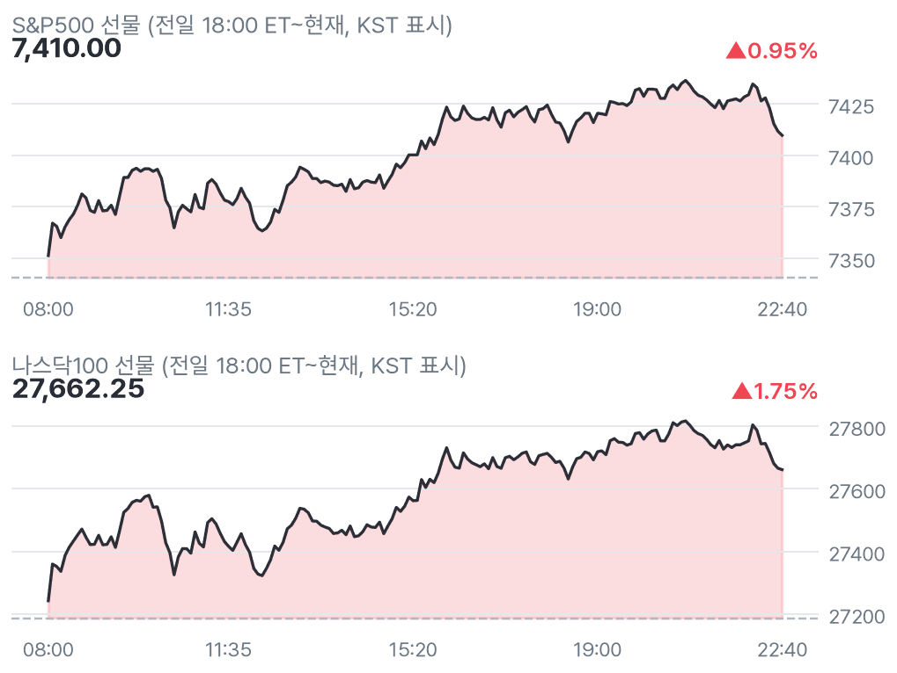
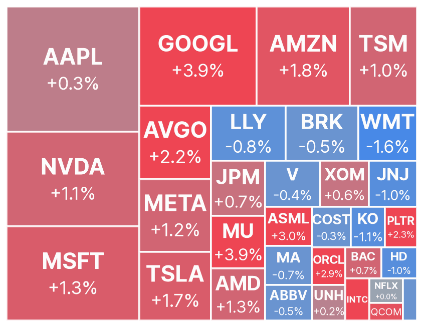
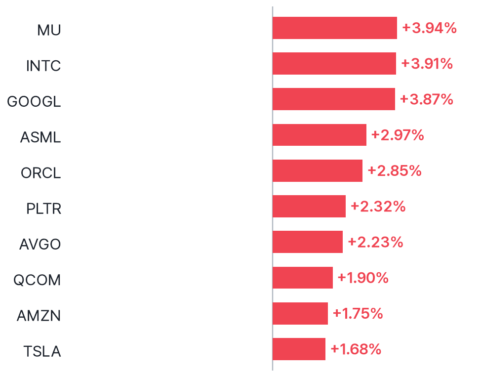
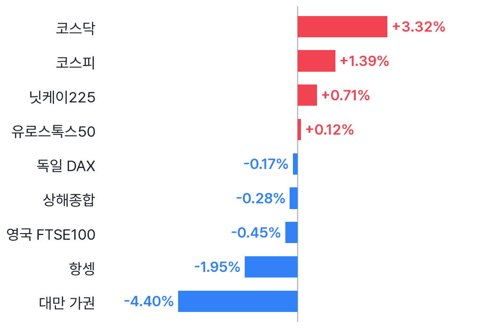
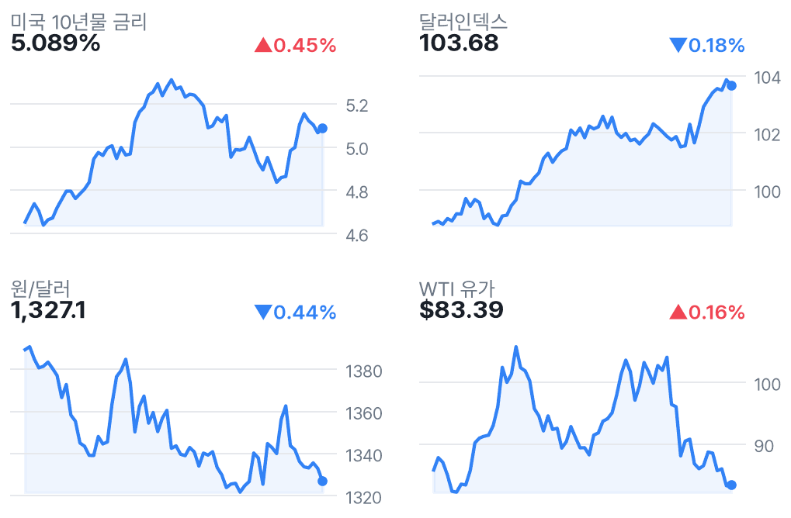

나스닥 선물 1.75%↑, 앤트로픽 IPO 기대
✅ 핵심 요약
- 나스닥 선물 +1.75%·S&P500 +0.95%…앤트로픽 IPO 기대에 AI주 반등.
- 실업수당 20.3만건(미 노동부), 예상 19.8만건 상회.
- 필라델피아 제조업 6.3(연은 발표), 예상 20.6·이전 20.9 하회.
- MU +3.94%·INTC +3.91%…반도체 반등, 미국 10년물 5.089%는 부담.
📊 주요 지표
S&P500 선물
7,410.00
▲0.95%
나스닥100 선물
27,662.25
▲1.75%
다우 선물
50,497
▲0.45%
러셀 선물
2,734.50
▲0.46%
VIX
22.55
▼8.18%
미국 10년물
5.089%
▲0.45%
달러인덱스
103.68
▼0.18%
원/달러
1,327.1
▼0.44%
WTI
$83.39
▲0.16%
금
$3,716
▼0.70%
비트코인
$63,730
▲1.18%
유로스톡스50
6,161.87
▲0.12%
🧭 시장 해석
앤트로픽 상장 기대가 AI 투자심리를 지지하며 나스닥100 선물이 1.75% 상승했다. 마이크론·인텔·알파벳이 강세지만, 선물의 1개월 등락은 -7.81%로 추세 회복 판단은 이르다.
미 노동부 신규 실업수당은 20.3만건으로 예상 19.8만건을 상회했고, 필라델피아 연은 제조업은 6.3으로 예상 20.6을 하회했다. 경기 둔화 신호에도 10년물은 5.089%로 상승해 금리 하락을 반등 원인으로 보기 어렵다. 국내 반도체에는 심리 개선 요인이지만 개장 후 상승 유지와 금리 반응을 함께 봐야 한다.
AI 반등과 금리 부담이 공존
S&P500 선물 +0.95%보다 나스닥100 선물 +1.75%가 강하다. MU +3.94%·INTC +3.91%·GOOGL +3.87%에 비해 NVDA는 +1.06%다. VIX는 8.18% 하락했지만 5일간 20.59% 올랐다. 해석상 위험선호 회복과 변동성 경계가 공존하는 구간이다.
월마트, 전망 상향과 주가 반응은 별개
CNBC 수집 헤드라인은 월마트의 전망 상향을 전했지만 프리마켓 주가는 -1.59%다. 전망 상향과 주가 방향은 다를 수 있다. 하락을 실적 부진으로 단정하지 않고, 발표 세부 내용과 개장 후 반응을 확인할 필요가 있다.
📈 차트
미국 지수 선물 야간 흐름

점선 = 전일 정산가
빅테크·대형주 프리마켓 히트맵

전일 종가 대비 프리마켓 현재가 · 타일 크기 = 시가총액
프리마켓 변동 상위 10 (대형주)

변동폭 절대값 기준
유럽(장중) · 아시아(마감) 증시

현지 기준 전일 대비
금리·달러·원화·유가 (3개월)

우측 상단 = 전일 대비
🏦 애널리스트 · 리서치
- NVDA — Freedom Broker 목표가 $305→$230 하향Buy 의견은 유지했다는 내용으로, 투자의견 하향과는 구분해야 한다.
- HD — Telsey Advisory Group 목표가 $410→$400 하향Outperform 의견을 유지하면서 목표가를 낮췄다는 의견이다. 프리마켓 -1.02%.
미국 대형주 의견·목표가 변경 2건 (Yahoo)
- 목표가 하향HD · Telsey Advisory GroupOutperform · 목표가 $410 → $400 · 11/19 05:13 KST
- 목표가 하향NVDA · Freedom BrokerBuy · 목표가 $305 → $230 · 11/19 04:55 KST
📰 주요 뉴스
-
AI 투자심리와 관련 기술주 반등 지속 여부의 시험대.CNBC
-
소비 수요와 비용 부담을 함께 점검할 실적 재료.CNBC
-
AI 투자 집중에 따른 시장 취약성을 지적한 의견.MarketWatch
미국·글로벌 헤드라인 18건
- An analyst explains the ‘trigger’ that prompted him to sell every stock he owns on Anthropic IPO dayCNBC · 11/19 22:48
-
MarketWatch · 11/19 22:46
-
CNBC · 11/19 22:45
-
CNBC · 11/19 22:45
-
WSJ Markets · 11/19 22:40
-
CNBC · 11/19 22:38
-
CNBC Markets · 11/19 22:37
-
CNBC · 11/19 22:37
-
CNBC · 11/19 22:23
-
CNBC · 11/19 22:21
-
Yahoo Finance · 11/19 22:15
-
Yahoo Finance Singapore · 11/19 22:12
-
CNBC · 11/19 22:05
-
Facebook · 11/19 22:01
-
CNBC · 11/19 21:46
-
MarketWatch · 11/19 21:45
-
CNBC Markets · 11/19 21:41
-
Reuters · 11/19 21:39
애널리스트 관련 헤드라인 12건
-
Benzinga · 11/19 22:46
-
Benzinga · 11/19 22:38
-
Benzinga · 11/19 22:31
-
Benzinga · 11/19 22:21
-
Benzinga · 11/19 22:17
-
Quantisnow · 11/19 21:50
-
Quantisnow · 11/19 21:41
-
Quantisnow · 11/19 21:40
-
Quantisnow · 11/19 21:40
-
Quantisnow · 11/19 21:40
-
Quantisnow · 11/19 21:35
-
Quantisnow · 11/19 21:35
국내 헤드라인 4건
-
톱스타뉴스 · 11/19 21:53
-
뉴스핌 · 11/19 21:36
-
CBC뉴스 · 11/19 21:00
-
SBS Biz · 11/19 16:32
🗓️ 일정
경제지표·이벤트 (KST)
- 22:30🇺🇸 미국 Philly Fed Manufacturing Index11/19 · 중요도 중간 · 예상 20.6 · 이전 20.9
- 22:30🇺🇸 미국 Unemployment Claims11/19 · 중요도 중간 · 예상 198K · 이전 200K
오늘 미국 실적 발표 (장전=발표 완료 · 장후=새벽)
- WMT Walmart Inc.장전시총 $1011.7B · EPS 예상 $0.64 · 시간외 ▼1.59%
- BABA Alibaba Group Holding Limited장전시총 $209.9B · EPS 예상 $1.56 · 시간외 ▼1.92%
- PDD PDD Holdings Inc.장전시총 $110.2B · EPS 예상 $2.61 · 시간외 ▲5.80%
- INTU Intuit Inc.장후시총 $85.7B · EPS 예상 $2.47
- NTES NetEase, Inc.장전시총 $76.3B · EPS 예상 $2.37 · 시간외 ▼5.43%
- ROST Ross Stores, Inc.장후시총 $70.4B · EPS 예상 $1.85
- KEYS Keysight Technologies Inc.장후시총 $48.4B · EPS 예상 $3.09
- WSM Williams-Sonoma, Inc.장전시총 $29.5B · EPS 예상 $2.18 · 시간외 ▼6.19%
👀 체크포인트
- 22:30 발표발표 확인: 제조업 6.3(예상 20.6), 실업수당 20.3만건(예상 19.8만건).
- 23:30미국장 개장: AI·반도체 반등 유지와 10년물 5.089%의 주가 부담 확인.
- 장후INTU·ROST·KEYS 실적; EPS 예상 각각 $2.47·$1.85·$3.09.